人脸表情识别模型：训练与微调技术报告
本项目“智能体语音通话”中的表情情绪检测模块，是通话链路上唯一的视觉感知通道：把学生表情转换成情绪信号， 供 AI 回应策略、负面情绪风险预警与「情绪树洞」页面消费。本报告只记录当前上线模型的 训练方案与最终结果：数据构成与标签处理、网络结构与训练超参、两套测试集上的完整指标、 误差结构与精度上限分析，以及人脸检测支线、端侧接入与真实链路实测。
本模块在项目中的作用
“智能体语音通话”是本平台面向学生的心理陪伴入口。通话链路上有两路输入：语音（转写 + 语义）与 画面（表情）。表情检测是其中唯一的视觉感知通道，它把学生的面部表情转成情绪标签与置信度， 随通话时间轴持续上报，供三个下游消费：
| 消费方 | 代码位置 | 用途 |
|---|---|---|
| AI 回应策略 | 语音通话浮层的情绪时间线 | 通话中把情绪带上行，让智能体的回应与情绪匹配（如检测到持续难过时降低语速、改换安抚话术） |
| 负面情绪风险预警 | 通话结束时的情绪聚合 | 统计整段通话的情绪分布与持续时长，识别需要人工关怀的学生 |
| 「情绪树洞」页面 | EmotionTrashPage.vue | 展示历史情绪记录，作为学生自我觉察的可视化 |
设计取舍：情绪信号不进入任何自动决策，只作为提示与统计维度； 界面上给出的置信度也如实展示。原因是面部表情到内心状态的映射本身不唯一，本报告第 6 节会用实测数据说明这一边界。
技术方案
一、网络结构
表情模型是一个面向浏览器端侧推理的轻量卷积网络：主干全部使用深度可分离卷积 （MobileNet 风格，逐通道卷积 + 逐点卷积），激活函数为 ReLU6，以宽度系数控制通道数； 在若干阶段后插入 SE 通道注意力（Squeeze-and-Excitation，压缩比 8），让网络自行调节通道权重； 末端为全局平均池化 + Dropout + 单层全连接输出 7 类 logits。
| 项目 | 数值 | 说明 |
|---|---|---|
| 输入尺寸 | 80 × 80 × 3 | 人脸裁剪后缩放为正方形，灰度图复制 3 通道 |
| 宽度系数 | 1.25 | 主干通道数放大倍数 |
| 注意力 | SE，压缩比 8 | 通道注意力，抑制与表情无关的通道 |
| 参数量 | 465,512 | 约 0.47 M，无预训练、从头训练 |
| 导出体积 | 1.88 MB | ONNX（含权重），浏览器本地加载 |
| 输出 | 7 类 | 生气 / 厌恶 / 害怕 / 开心 / 平静 / 难过 / 惊讶 |
为什么不用预训练主干：目标域是 48–100 像素的人脸灰度图，与 ImageNet 的自然图像分布差异很大， 而网络本身不足 0.5 M 参数。实测直接从头训练收敛更快、最终精度更高，也避免了额外的权重分发。
二、训练侧的关键处理
- Focal Loss（γ=2.0）：FER2013 存在长尾（最多与最少类样本比 16.5:1，去噪与合并后降到 10.4:1）， focal loss 降低易样本权重，让梯度集中在难样本与稀有类上；
- 温和的逆频重采样（
WeightedRandomSampler，采样权重按类频的 0.5 次方）： 只把长尾拉平一部分，避免过度重采样导致稀有类过拟合； - 标签平滑（0.1）：抑制模型对单一标签的过度自信，同时缓解标注噪声带来的硬拟合；
- 数据增强：水平翻转 0.5、±12° 旋转、12% 平移、12% 缩放、±25% 亮度，外加 RandomErasing（概率 0.3）；
- 权重滑动平均 EMA（0.999）：用平滑后的权重做评估与导出，显著降低验证波动；
- 水平翻转 TTA：推理时对原图与水平翻转图各跑一次、取 logits 平均，
与前端实现完全一致（
useEmotionDetection.ts中同一趟生成两个张量）； - 混合精度 AMP + 梯度裁剪（5.0）：在 4 GB 显存的笔记本 GPU 上把 batch 提到 256；
- 标签去噪：对 FER2013 训练集做 3 折交叉验证的一致性筛查，剔除高置信冲突样本 （命中 53/28,709，占 0.18%），降低标注噪声对决策边界的干扰。
数据集
训练使用两个数据源合并的联合训练集：FER2013（实验室摆拍，48×48 灰度）提供 7 类基本情绪的 密集监督，RAF-DB（真实场景 in-the-wild，100×100 彩色）提供真实摄像头的成像分布。 检测支线另用 WIDER FACE 训练 YOLOv8n 人脸检测器。
| 类别 | FER2013 训练 | FER2013 测试 | RAF-DB 训练 | RAF-DB 测试 | 联合训练集 | 占比 |
|---|---|---|---|---|---|---|
| 生气 angry | 3,995 | 958 | 705 | 162 | 4,700 | 11.5% |
| 厌恶 disgusted | 436 | 111 | 717 | 160 | 1,153 | 2.8% |
| 害怕 fearful | 4,097 | 1,024 | 281 | 74 | 4,378 | 10.7% |
| 开心 happy | 7,215 | 1,774 | 4,772 | 1,185 | 11,987 | 29.3% |
| 平静 neutral | 4,965 | 1,233 | 2,524 | 680 | 7,489 | 18.3% |
| 难过 sad | 4,830 | 1,247 | 1,982 | 478 | 6,812 | 16.6% |
| 惊讶 surprised | 3,171 | 831 | 1,290 | 329 | 4,461 | 10.9% |
| 合计 | 28,709 | 7,178 | 12,271 | 3,068 | 40,980 | 100% |
表中"联合训练集"列按原始标注统计，合计 40,980 张；其中 FER2013 部分再经标签去噪剔除 53 张（占 0.18%）， 因此实际投入训练的联合集为 40,927 张（FER2013 28,656 + RAF-DB 12,271），真实场景样本占 30.0%。 按 9:1 划分训练/验证：训练 36,835 张、验证 4,092 张。类间不平衡度由 FER2013 原始的 16.5:1 降到 10.4:1。
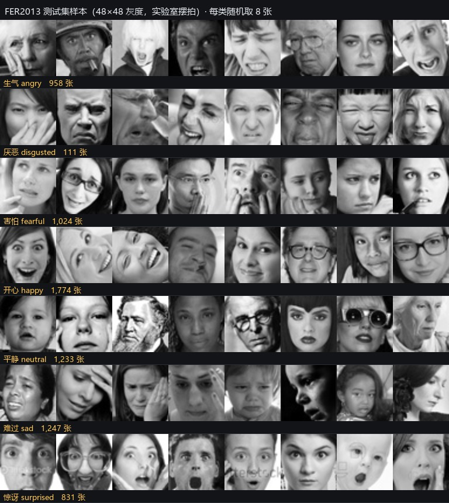
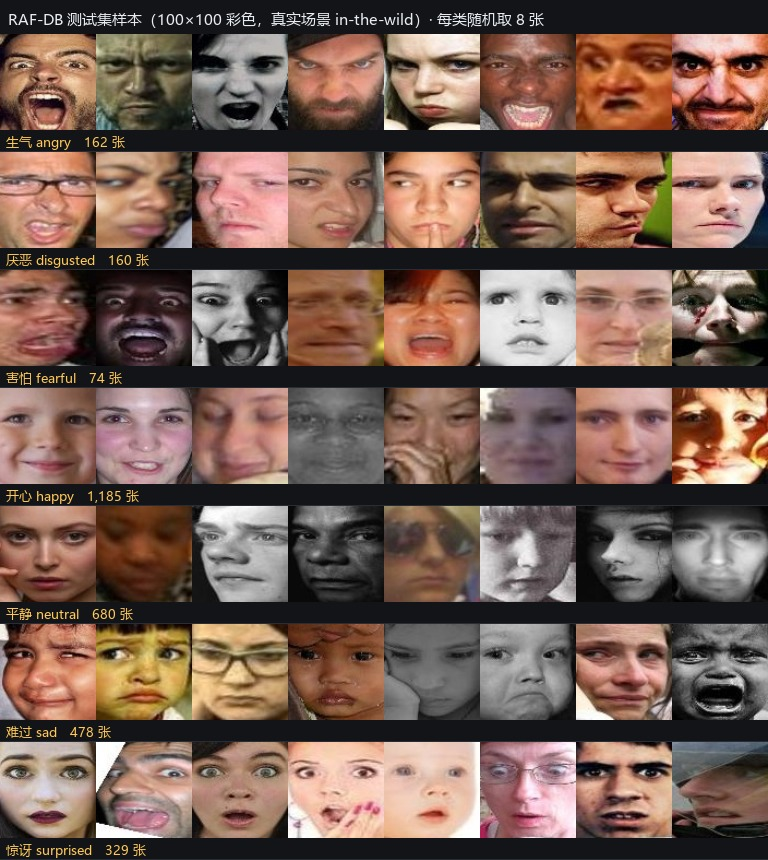
两个数据集的口径差异（阅读后续结果前请先看这条）： RAF-DB 的测试集是按人脸框中心裁切后的 100×100 图，而 FER2013 是 48×48 的整图灰度图。 两者不是同一成像链路，因此两列准确率不可横向比较，应分别作为"真实场景口径"与"实验室口径"来读。 本模块的部署域是真实摄像头，故以 RAF-DB 口径为主要参考。
训练配置
下表是当前上线模型（rafmix4）这一次训练的完整超参数，可作为复现依据。
| 类别 | 参数 | 取值 |
|---|---|---|
| 数据 | 训练文件 | train_raf.pt（FER2013 去噪 + RAF-DB） |
| 输入尺寸 | 80 × 80 | |
| 训练 / 验证样本 | 36,835 / 4,092（9:1） | |
| 批大小 | 256 | |
| 数据加载 | 预解码进内存（preload） | |
| 优化 | 优化器 | AdamW |
| 基础学习率 | 3e-3（分类头 ×3 = 9e-3） | |
| 权重衰减 | 5e-4 | |
| 学习率调度 | 余弦退火 + 4 轮预热，下限 1e-5 | |
| 训练轮数 | 50 | |
| 损失与正则 | 损失函数 | Focal Loss（γ=2.0） |
| 标签平滑 | 0.1 | |
| 长尾重采样 | 类频 0.5 次方加权 | |
| Dropout | 0.3 | |
| RandomErasing | 概率 0.3，面积 0.02–0.2 | |
| 梯度裁剪 | 5.0 | |
| 增强 | 水平翻转 | 0.5 |
| 旋转 / 平移 / 缩放 | ±12° / 12% / 12% | |
| 亮度扰动 | ±25% | |
| MixUp | 未启用 | |
| 工程 | 混合精度 AMP | 开启 |
| EMA 衰减 | 0.999 | |
| 测试时增强 TTA | 水平翻转平均 | |
| 随机种子 | 42 |
训练过程与结果
本次训练共 50 轮，用时 1,692 秒（约 28 分钟），最佳验证准确率 0.7085（第 44 轮）， 之后 6 轮验证指标走平、未出现回升，说明学习率已充分退火、训练充分收敛。
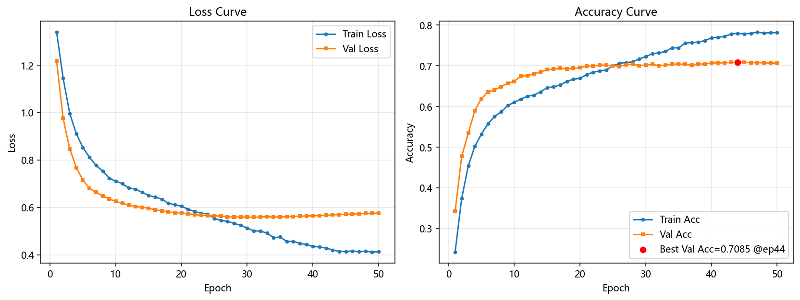
关于"是否过拟合"：训练集准确率比验证集高约 7.5 个百分点，这是正常且预期的差距 —— 训练集的数值是在随机增强（旋转、平移、缩放、亮度、RandomErasing）与长尾重采样之后统计的，与干净的验证集不同分布。 判断过拟合更可靠的依据是验证集本身的走势：验证准确率一路升到第 44 轮才见顶，最后 6 轮不再回落， 也未见验证损失上升，因此本模型处于"已收敛、未过拟合"的状态。
一、FER2013 测试集（实验室口径）
| 指标 | 数值 |
|---|---|
| 准确率 | 0.6736 |
| Top-2 命中率 | 0.8533 |
| Top-3 命中率 | 0.9281 |
| Macro-F1 | 0.6531 |
| 加权 F1 | 0.6714 |
| 类别 | 样本数 | 召回率 | F1 | 占总错误 |
|---|---|---|---|---|
| 开心 happy | 1,774 | 0.869 | 0.881 | 9.9% |
| 难过 sad | 1,247 | 0.574 | 0.561 | 22.7% |
| 平静 neutral | 1,233 | 0.698 | 0.639 | 15.9% |
| 害怕 fearful | 1,024 | 0.398 | 0.463 | 26.3% |
| 生气 angry | 958 | 0.635 | 0.605 | 14.9% |
| 惊讶 surprised | 831 | 0.765 | 0.776 | 8.3% |
| 厌恶 disgusted | 111 | 0.586 | 0.647 | 2.0% |
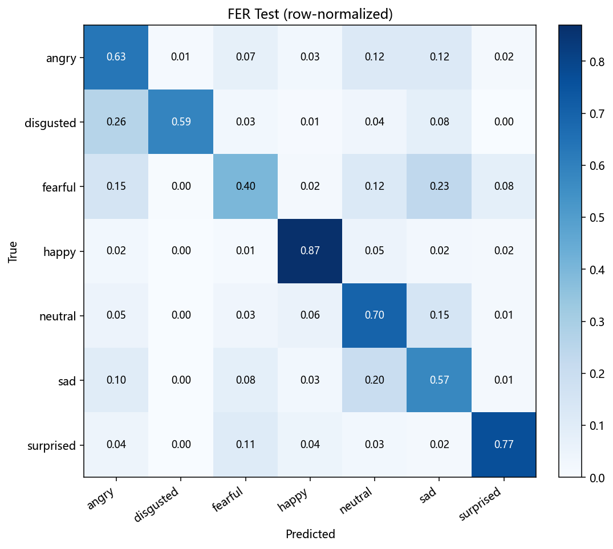
二、RAF-DB 测试集（真实场景口径，部署域）
| 类别 | 样本数 | 召回率 | F1 | 占总错误 |
|---|---|---|---|---|
| 开心 happy | 1,185 | 0.877 | 0.919 | 25.8% |
| 平静 neutral | 680 | 0.776 | 0.784 | 26.9% |
| 难过 sad | 478 | 0.887 | 0.782 | 9.6% |
| 惊讶 surprised | 329 | 0.805 | 0.835 | 11.3% |
| 生气 angry | 162 | 0.790 | 0.709 | 6.0% |
| 厌恶 disgusted | 160 | 0.519 | 0.517 | 13.6% |
| 害怕 fearful | 74 | 0.486 | 0.558 | 6.7% |
| 总体 | 3,068 | 0.8158（准确率） | 0.7293（Macro-F1） | Top-2 0.9244 |
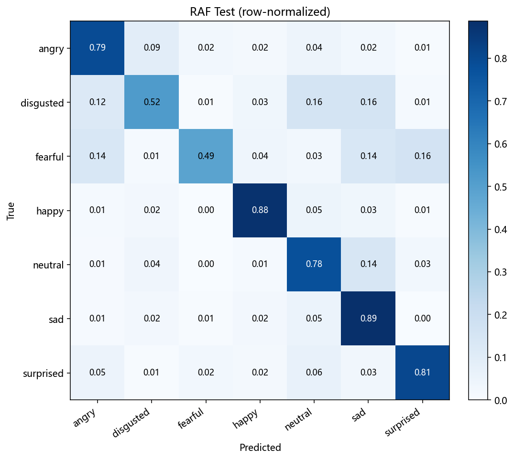
读法提醒：同一份权重在 FER2013 上 0.6736、在 RAF-DB 上 0.8158， 不是"模型在真实场景更准"，而是两个测试集的难度与标注质量不同： FER2013 是 48×48 灰度图、标注噪声大；RAF-DB 是 100×100 彩色图、经过标注一致性筛选。 本模块的实际部署域是真实摄像头，因此以 RAF-DB 一列为主要参考。
三、多粒度评估口径
七类细分（"厌恶还是害怕"）是学术指标；而通话链路真正需要的是粗粒度情绪倾向。
同一组 logits 按组求和即可得到更粗的口径（实现见 ml/metrics.py 的 grouped_accuracy），
这不是换测试集，而是同一批预测的不同汇总方式。
| 口径 | 分组方式 | FER2013 | RAF-DB 真实场景 |
|---|---|---|---|
| 7 类细分 | 生气 / 厌恶 / 害怕 / 开心 / 平静 / 难过 / 惊讶 | 0.6736 | 0.8158 |
| Top-2 命中率 | 真实类别落在前两名即可 | 0.8533 | 0.9244 |
| 极性三分组 | 正性 / 中性 / 负性 | 0.8045 | 0.8510 |
| 二元·是否需要关怀 | 负性（难过+生气+害怕+厌恶）vs 其余 | 0.8364 | 0.8794 |
| 二元·是否开心 | 开心 vs 非开心 | 0.9373 | 0.9299 |
四、按标注一致性分层评估
FER2013 的测试集标签存在可观噪声。为了量化这部分影响，本项目用两套彼此独立的标注做了对照： FER2013 原始标签，与 FER+（Microsoft 对同一批图像、由每张约 10 名标注者投票聚合得到的重新标注）[4]。 用感知哈希 + 48×48 灰度逐张匹配同一张图后：
| 项目 | 训练集 | 测试集 |
|---|---|---|
| 样本数 | 28,709 | 7,178 |
| 两套标注都能匹配上 | 26,116（91.0%） | 6,540（91.1%） |
| 两套标注不一致 | 9,594（33.4%） | 2,381（33.1%） |
也就是说，测试集里 33.1% 的样本，两套独立标注给出了不同答案 —— 这些样本不存在自洽的"正确答案"。 把它们单独切开看，模型的表现差异是决定性的：
| 口径 | 全部测试集 | 无争议子集（4,799 张，66.9%） | 有争议子集（2,379 张，33.1%） |
|---|---|---|---|
| 7 类细分 | 0.6736 | 0.8368 | 0.1606 |
| Top-2 命中率 | 0.8533 | 0.9373 | 0.4838 |
| 极性三分组 | 0.8045 | 0.8718 | 0.4359 |
| 二元·是否需要关怀 | 0.8364 | 0.9031 | 0.4880 |
| 二元·是否开心 | 0.9373 | 0.9500 | 0.9105 |
为什么"有争议子集"的数字这么低（且不必慌）：该子集是按"两套标注不一致"挑出来的， 而模型的训练标签来自其中一套（FER2013 原始标注 + RAF-DB），因此它在这批样本上必然只能满足一套口径 —— 0.18 反映的是标注口径冲突，而不是模型失效。反过来也说明：在无争议的 66.9% 样本上， 7 类准确率 0.8368、Top-2 0.9373、二元判断 0.90 以上，这才是模型真实能力的度量。
误差结构与精度上限
为判断"准确率还能不能往上走"，把混淆矩阵拆开统计了每个类对总错误的贡献，并计算了两类反事实上限。 结论是：剩余误差高度集中，且上限由标注歧义决定，而不是由模型容量决定。
| 指标 | FER2013 | RAF-DB 真实场景 |
|---|---|---|
| 当前准确率 | 0.6736 | 0.8158 |
| 错误最集中的两个类 | 害怕 26.3% + 难过 22.7% | 平静 26.9% + 开心 25.8% |
| 这两类占总错误 | 49.0% | 52.7% |
| 前三个类占总错误 | 64.9% | 66.4% |
| 修正最大的 2 对混淆后的上限 | 0.7417 | 0.8654 |
| 修正最大的 3 对混淆后的上限 | 0.7669 | 0.8778 |
| 只做 5 类（去掉害怕/厌恶） | 0.7657 | 0.8704 |
最大的几对混淆全部落在"低唤醒 / 负性"这一簇内部：FER2013 上为 难过→平静（占总错误 10.8%）、 害怕→难过（10.1%）、平静→难过（7.7%）、害怕→生气（6.5%）；RAF-DB 上为 平静→难过（16.8%）、 开心→平静（10.1%）。这些恰恰是人类标注者也难以统一的地带。
为什么 7 类准确率到不了 90%（必须写清的一条）： 第一，人类自身的上限：FER2013 论文与后续文献给出的人类标注一致率约 65%（65±5%）[1][2]， 即细分到"厌恶还是害怕"这一层，人自己也只有六成多一致；第二，可复现的 SOTA 量级： FER2013 上约 73–76%，且普遍依赖额外数据或重型网络[3]， RAF-DB 的 SOTA 约 87–88%，用的是 ViT/VGG 级主干，参数量比本模型高一到两个数量级； 第三，本项目的实测证据：把最容易混的三对全部修对，上限也只有 0.7669 / 0.8778， 且测试集里 33.1% 的样本标注本身互相矛盾。 因此本报告的结论是：7 类细分口径下 0.67（FER2013）/ 0.82（真实场景）已是这一数据规模下的现实水平， 继续堆网络与调参的边际收益很低；若要进一步提升，唯一有意义的投入是采集一套标注口径统一的真实场景数据。
人脸检测支线：YOLOv8n
表情模型只负责"这是哪种情绪"，把脸"从画面里找出来并裁下来"由独立的检测器完成。
为保证真实摄像头下的定位可靠性，检测器没有使用通用预训练权重，而是在真实场景人脸基准 WIDER FACE
上训练了单类别 YOLOv8n（ultralytics），再导出 ONNX 供浏览器端推理。
| 项目 | 内容 |
|---|---|
| 训练数据 | WIDER FACE 真实场景 3,226 张 / 39,703 个标注人脸（含大量极小、遮挡、侧脸），按 15% 切分为训练 2,739 张 / 验证 483 张 / 5,724 个框 |
| 检测指标 | Precision 0.811、Recall 0.572、mAP50 0.644、mAP50-95 0.293 |
| 指标解读 | 召回偏低是被 WIDER FACE 中大量十几像素的极小脸拉低的；本模块关心的"通话尺度人脸"（占画面高度 30%–50%）复测命中率为 95.0%（285/300） |
| 导出与接入 | 320×320 ONNX（11.6 MB），前端 yoloFaceDetector.ts 实现 letterbox 预处理、输出解码与 NMS；失败时自动回退 face-api.js 的 tinyFaceDetector |
| 主目标人脸选择 | 多脸场景下选面积最大者为分析目标，避免把背景人脸当成被通话者 |

端侧接入与实时策略
模型在浏览器本地推理，画面不上传。单帧处理链路如下：
getUserMedia 取帧
→ YOLOv8n 人脸检测（320×320 ONNX，解码 + NMS，取面积最大者为分析目标）
→ 检测框时序平滑 EMA(α=0.4) ← 稳定裁剪窗口
→ 方形补边裁剪 → 缩放 80×80 → 灰度复制 3 通道 → 归一化 [-1,1] ← 与训练口径一致
→ 表情 ONNX 推理（原图 + 水平翻转 TTA，logits 平均）
→ 情绪稳定器（相对优势 + 快攻慢放滞回滤波）
→ 情绪快照上报（节流）一、为什么要做"稳定器"，以及最终策略
逐帧推理的输出会有抖动，直接显示会闪。但如果压得太狠，又会出现"表情已经变了、界面还挂着旧情绪"。 最终采用的方案分三层：
- 相对优势判定（针对细微变化）：比较
p(新标签) − p(当前显示标签)， 相对优势 ≥ 0.12 且连续 2 次即切换。之所以不用绝对置信度，是因为轻微表情变化时新标签的概率常只有 0.4 左右， 用绝对阈值（如 ≥0.55）会永远够不到，表现就是"识别不到微变化"； - 快攻慢放：置信度 ≥0.75 时一票即切；≥0.55 且连续 2 次即切；其余情况退回 3 帧窗口多数票（需 2/3 多数），抑制随机抖动；
- 检测框时序平滑：检测框帧间会抖几个像素，而它是裁剪窗口的依据；框一抖，嘴角、眉梢那几个像素的差别 就被淹没在裁剪噪声里。对框做 EMA 平滑后裁剪窗口稳定，弱信号才攒得起来（目标大幅位移时自动重置）。
| 策略 | 切换滞后 | 稳定期准确率 | 标签翻转次数 | 弱信号跟随率 |
|---|---|---|---|---|
| 不平滑（对照） | 0.16 秒 | 0.6583 | 92 | — |
| 本版（上线） | 0.34 秒 | 0.8083 | 34 | 0.8947 |
"弱信号跟随率"指模型自己判对、但置信度低于 0.55 的帧中，输出仍跟随真实类别的比例 —— 它正是"细微变化"的直接代理指标。
上线版用 0.18 秒的额外延迟，换来稳定期准确率 +15 个百分点、抖动从 92 次降到 34 次，同时微变化跟随率仍有 0.8947，
即没有被自己的平滑策略吞掉。评测脚本为 ml/smoother_eval.py，可复现。
二、性能与节流
| 参数 | 取值 | 说明 |
|---|---|---|
| 推理节流 | 160 ms | 表情只需秒级粒度，避免每帧都跑；检测与推理本身快于该间隔 |
| 情绪快照间隔 | 按变更触发 | 通话中仅在情绪发生变更时上报，降低上行与存储开销 |
| 表情模型 | 1.88 MB | 本地加载，WASM 后端（onnxruntime-web/wasm，14 MB 运行时随包分发） |
| 检测模型 | 11.6 MB | YOLOv8n，320×320 |
| 降级路径 | 自动 | YOLOv8n 加载失败则回退 face-api.js tinyFaceDetector，保证功能可用 |
真实链路验证
离线测试集只能反映模型，不能反映"浏览器 + 摄像头 + 检测 + 裁剪 + 平滑"整条链路。
因此本项目另建了一套端到端实测：用系统自带 Edge 以子进程启动（--use-file-for-fake-video-capture
喂入一段标注与时间轴已知的真实场景人脸视频，或切换为真机摄像头），
页面把每一帧的情绪快照连同时刻回传给本地收集服务，再由评测脚本按时间轴比对[8]。
| 项目 | 结果 |
|---|---|
| 端到端准确率 | 0.8517（448 / 526） |
| 人脸覆盖率 | 1.00（14 / 14 帧） |
| 检测后端 | yolov8n（实测回传确认，非回退路径） |
| 采样条数 | 780 |
| 运行时报错 | 无 |
| 类别 | 采样数 | 段内准确率 |
|---|---|---|
| 厌恶 disgusted | 76 | 1.00 |
| 害怕 fearful | 76 | 1.00 |
| 开心 happy | 76 | 1.00 |
| 平静 neutral | 73 | 1.00 |
| 惊讶 surprised | 76 | 1.00 |
| 难过 sad | 75 | 0.48 |
| 生气 angry | 74 | 0.47 |
五个类别在各自片段内稳定判对；难过与生气约五成，两者在段内互相切换 —— 这正是误差分析中指出的 "低唤醒 / 负性"相近类混淆（难过↔生气）在真实链路中的体现，与该模型在离线测试集上的混淆结构一致，不是链路引入的新问题。 真机摄像头模式（本机物理摄像头）连续运行 30 秒亦稳定输出、无报错，可定性确认链路可用。

这套实测的价值：静态检查与离线测试集都无法覆盖真实链路。
本项目在实测中修掉了三个只在真实浏览器里才会暴露的问题：ONNX Runtime Web 入口选错导致模型加载失败、
Vite 对 public 下 .mjs 带查询串返回 500、以及采样回传被截断导致时间轴错位（曾把准确率虚压到 0.27）。
任何模型上线前都应过一遍真实链路实测。
工程落地
| 类别 | 文件 | 说明 |
|---|---|---|
| 前端（生产代码） | frontend/src/composables/useEmotionDetection.ts | 表情检测组合式函数：模型加载、裁剪、TTA 推理、情绪稳定器、检测框平滑 |
frontend/src/composables/yoloFaceDetector.ts | YOLOv8n 人脸检测：letterbox 预处理、输出解码、NMS、主目标选择 | |
frontend/src/components/VoiceCallOverlay.vue | 通话浮层，调用上述组合式函数并展示情绪 | |
| 模型（静态资源） | frontend/public/models/emotion_se80_rafmix4.onnx | 表情分类模型（1.88 MB） |
frontend/public/models/face_yolov8n.onnx | 人脸检测模型（11.6 MB） | |
| 训练与评测（后端） | backend/ml/train.py + configs/rafmix4.json | 训练主程序与本次训练的全部超参 |
backend/ml/architectures.py / losses.py / dataset.py | 网络结构（含 SE）、Focal Loss、数据增强与长尾采样 | |
backend/ml/real_fer.py / ferplus.py | RAF-DB 与 FER+ 数据接入、标签一致性匹配 | |
backend/ml/eval_extra.py / metrics.py / error_analysis.py | 跨数据集评估、多粒度口径、误差结构分析 | |
backend/ml/export_onnx.py / e2e_emotion.py / smoother_eval.py | ONNX 导出与数值一致性校验、真实链路实测、稳定策略评测 |
复现命令（在 backend 目录、conda 环境 aistudy 下）：
# 训练（约 28 分钟）
python -m ml.train --config ml/configs/rafmix4.json
# 导出 ONNX 并做数值一致性校验
python -m ml.export_onnx --run <run_id> --out ../frontend/public/models/emotion_se80_rafmix4.onnx
# 跨数据集评估 / 误差结构 / 稳定策略评测
python -m ml.eval_extra --run-id <run_id> --data test_raf.pt --tag raf
python -m ml.error_analysis --run <run_id>
python -m ml.smoother_eval --run <run_id>结论
当前上线模型 rafmix4 的最终结果：真实链路端到端 0.8517、 RAF-DB 真实场景 0.8158（Macro-F1 0.7293、Top-2 0.9244）、 FER2013 0.6736（Macro-F1 0.6531）；模型仅 46.6 万参数、导出 1.88 MB， 在浏览器本地推理、不依赖 GPU、画面不出端。
三点必须写清的边界：
- 两套测试集口径不同，不可横向比较：真实场景 0.8158 与实验室 0.6736 的差异主要来自数据难度与标注质量， 不是"模型在真实场景更准"。部署域是真实摄像头，以 0.8158 与端到端 0.8517 为主要参考。
- 7 类细分到不了 90%，这是标注歧义决定的：人类标注一致率约 65%，测试集里 33.1% 的样本两套独立标注互相矛盾； 把最容易混的三对全部修对，上限也只有 0.7669（FER2013）/ 0.8778（真实场景）。 在无争议子集上模型可达 7 类 0.8368、Top-2 0.9373；在产品实际消费的二元口径上 （是否需要关怀、是否开心）为 0.88–0.95。
- 最弱的是害怕与厌恶（真实场景召回 0.486 / 0.519），它们在 FER 与 RAF 两个数据集里都是稀有类 （训练样本仅 4,378 / 1,153 张），属于数据本身的结构性短板。
后续若要继续提升，按收益排序：(1) 采集一套标注口径统一的真实场景数据 （约 2,000–3,000 张即可，标签标准由使用者定义，即可消除"两套标注互相矛盾"的问题）， 并在该集上评估；(2) 针对害怕 / 厌恶两个稀有类做定向补样； (3) 继续在 FER2013 上加大网络或调参的边际收益很低，不建议投入。
附录 A 数据集角色与样张核对
| 数据集 | 类型 | 规模 | 角色 |
|---|---|---|---|
| FER2013 | 48×48 灰度，实验室摆拍 | 训练 28,709 / 测试 7,178 | 七类基本情绪的主训练集与"实验室口径"基准 |
| FER+ | FER2013 同一批图像的众包聚合标签（每张约 10 人投票） | 35,481 | 仅用于标注一致性核验（与 FER2013 原始标注不符率 33.1%），不参与训练 |
| RAF-DB | 100×100 彩色，真实场景 | 训练 12,271 / 测试 3,068 | 真实场景域适配的训练数据；其测试集作为"真实摄像头准确率"的量化代理 |
| WIDER FACE | 真实场景人脸检测基准 | 3,226 图 / 39,703 个标注人脸 | YOLOv8n 人脸检测器的训练与评估数据 |
| 联合训练集 | FER2013（去噪）+ RAF-DB | 40,927（真实场景占 30%） | 上线模型的训练数据 |
为防止"标签语义猜错"这类难以察觉的错误，两个数据集的类别语义均用样张拼图人工核对 （每类随机取若干张并列，标注中文 / 英文 / 张数），确认逐类与标注一致后才投入训练。
附录 B 关键代码
以下代码截图均从项目当前源文件按锚点原样抽取渲染，行号为真实行号。
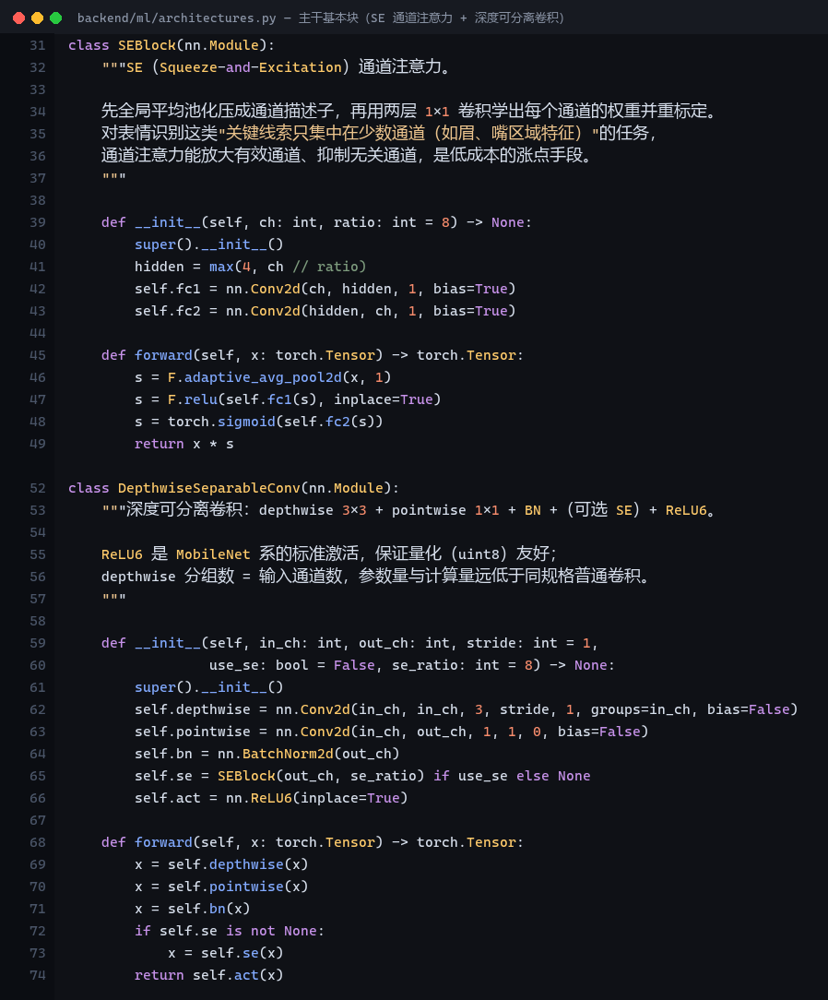
architectures.py）。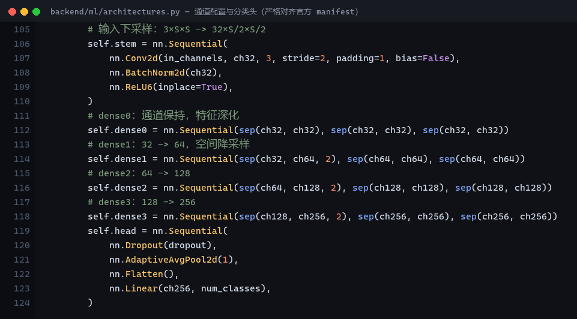
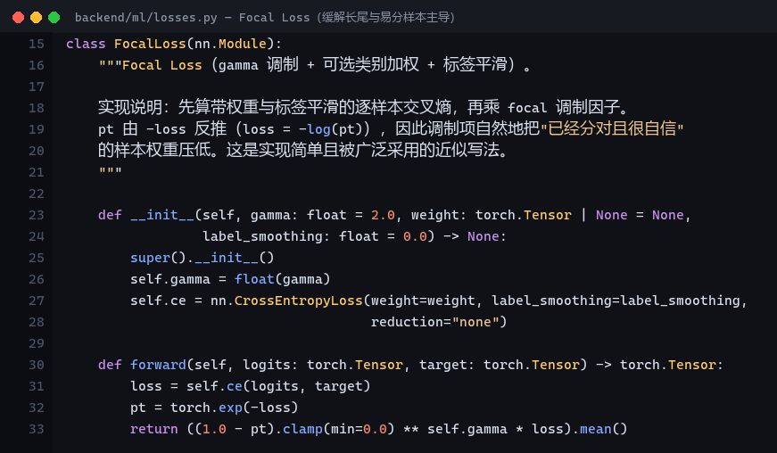
losses.py）。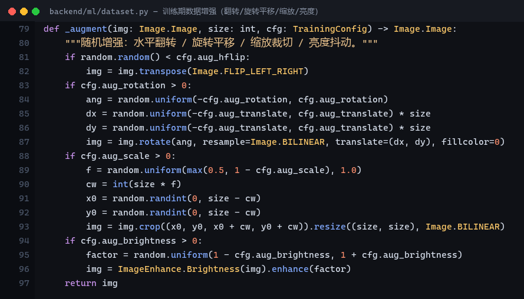
dataset.py）。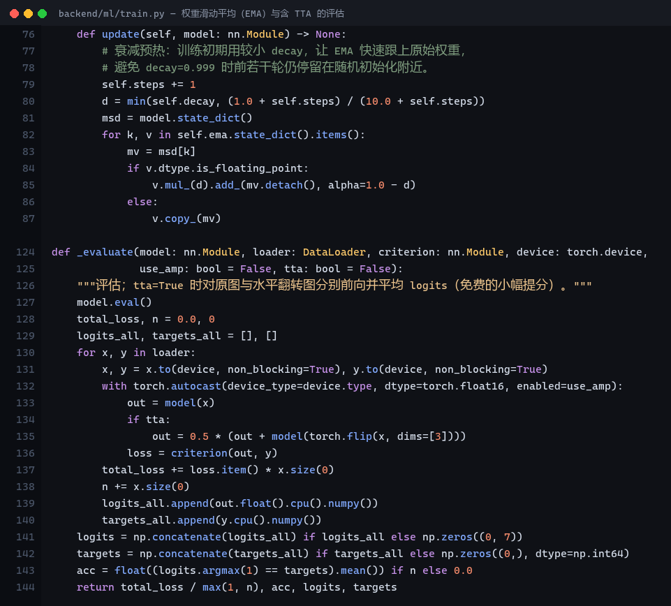
train.py）。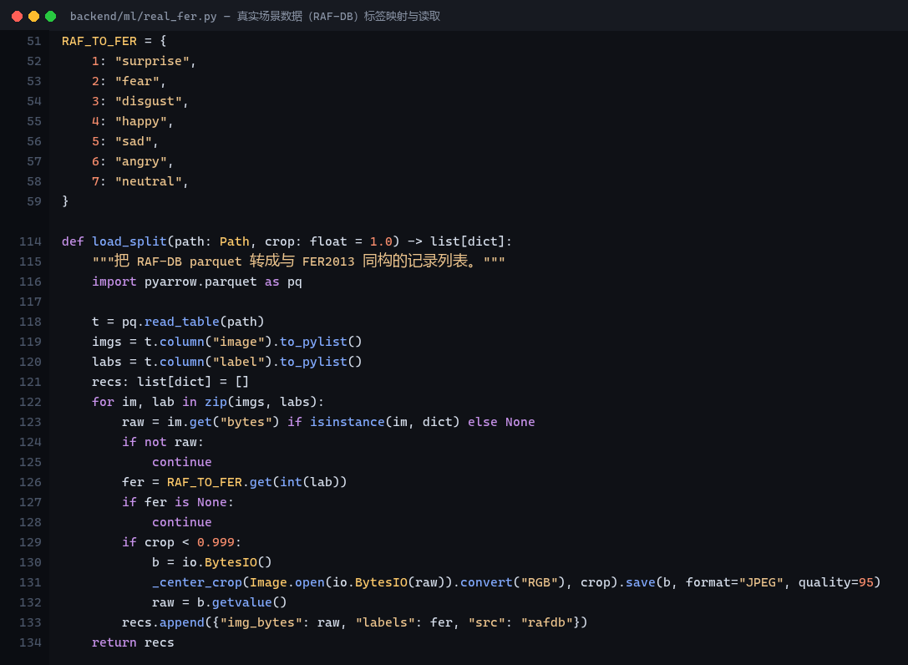
real_fer.py）。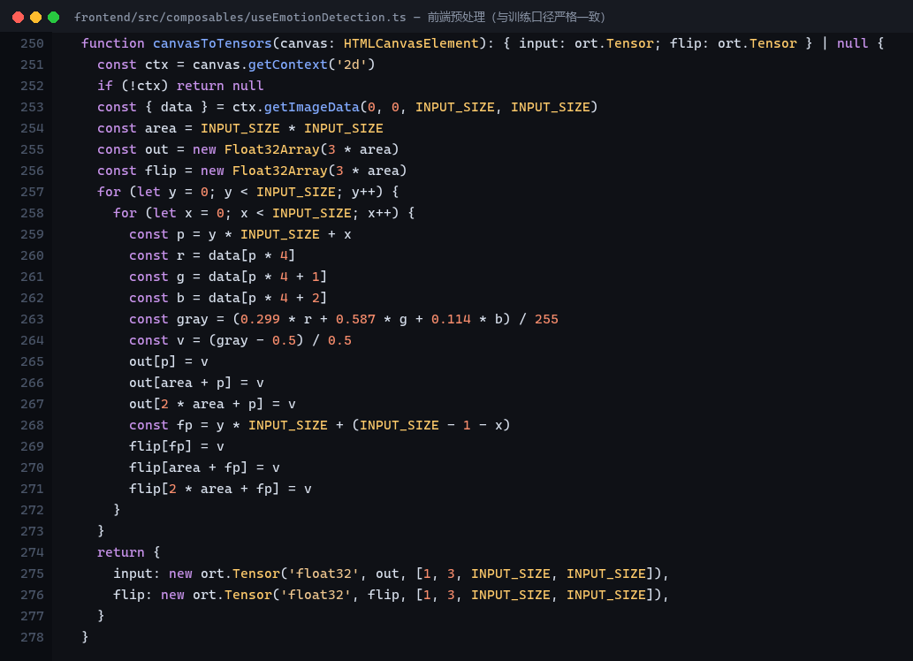
useEmotionDetection.ts）。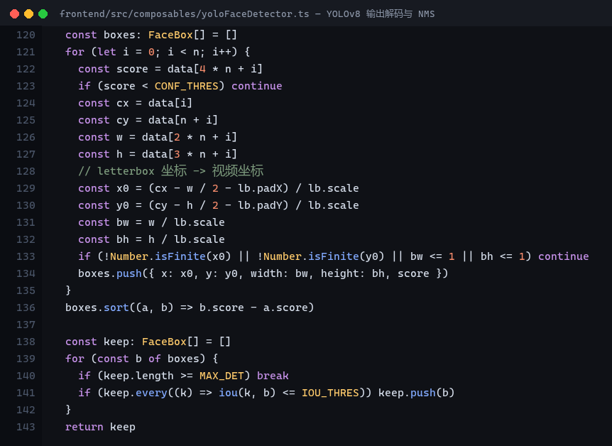
yoloFaceDetector.ts）。